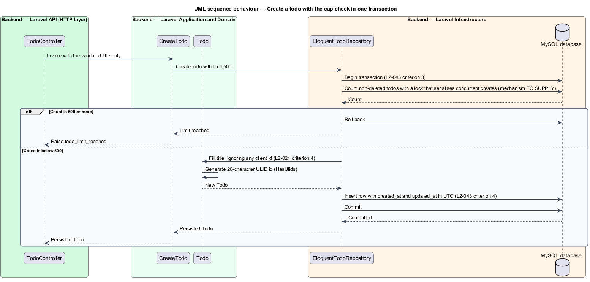

IQueryable, ExecuteUpdate, transactions and isolation, mapped onto EloquentTodoRepository
toBaseupdate issues a query-level statement instead of saving the modelpublic function list(TodoStatus $status): Collection
{
$query = Todo::query()->orderByDesc('created_at')->orderByDesc('id');
match ($status) {
TodoStatus::All => null,
TodoStatus::Active => $query->active(),
TodoStatus::Completed => $query->completed(),
};
return $query->get()->toBase();
}
(deleted_at, created_at, id) index: MySQL reads it in orderWhere clauses; nothing runs until get()toBase(): Eloquent collection → plain Illuminate\Support\Collection, the type the interface declaresasync, a query blocks the workerIQueryable<Todo> q = db.Todos
.OrderByDescending(t => t.CreatedAt)
.ThenByDescending(t => t.Id);
q = status switch
{
TodoStatus.Active => q.Where(t => t.CompletedAt == null),
TodoStatus.Completed => q.Where(t => t.CompletedAt != null),
_ => q,
};
return await q.ToListAsync(ct);
| Eloquent | EF Core |
|---|---|
Todo::query() | db.Todos (an IQueryable) |
scope active() | a reusable Where extension |
get() | ToListAsync() |
find($id) / onlyTrashed()->find($id) | FindAsync / IgnoreQueryFilters().FirstOrDefaultAsync |
count() through a scope | CountAsync() |
public function counts(): array
{
return [
'active' => Todo::query()->active()->count(),
'completed' => Todo::query()->completed()->count(),
];
}
public function find(string $id): ?Todo
{
return Todo::query()->find($id);
}
public function delete(Todo $todo): void
{
$todo->delete();
}
public function findDeleted(string $id): ?Todo
{
return Todo::onlyTrashed()->find($id);
}
find honours the soft-delete filter; findDeleted inverts it. That pair is what lets the Actions express different not-found rules.
public function update(Todo $todo, array $columns): Todo
{
// A query-level update writes every given column in one statement, even one
// that matches a stale read, which a model save() would skip as clean.
$values = array_map(
fn (mixed $value): mixed => $value instanceof DateTimeInterface ? $todo->fromDateTime($value) : $value,
$columns,
);
Todo::query()->whereKey($todo->getKey())->update($values);
return $todo->refresh();
}
save() writes only dirty attributes, like SaveChanges; a concurrent patch could skip a column it considers cleanUPDATE. That is ExecuteUpdateAsync, not change trackingfromDateTime (UTC)refresh() returns the row as stored$patch = fn (string $title, string $completed): array => [
PHP_BINARY, 'artisan', 'tinker', '--execute',
"app(App\\Actions\\Todos\\UpdateTodo::class)->handle('{$todo->id}', ['title' => '{$title}', 'completed' => {$completed}]);",
];
$env = ['DB_DATABASE' => config('database.connections.mysql.database'), 'APP_ENV' => 'testing'];
$results = Process::pool(function ($pool) use ($patch, $env): void {
$pool->path(base_path())->env($env)->command($patch('First', 'true'));
$pool->path(base_path())->env($env)->command($patch('Second', 'false'));
})->start()->wait();
$final = Todo::on('committed')->findOrFail($todo->id);
expect($results->successful())->toBeTrue()
->and([$final->title, $final->completed])->toBeIn([['First', true], ['Second', false]]);
Two real PHP processes, one row, and the final state must equal one request in full, never a mix.
public function createWithinLimit(string $title, int $limit): Todo
{
// The locking read takes next-key locks on the scanned index range, so a
// concurrent create waits here until this transaction commits, then counts
// the new row. A deadlock is retried by the transaction attempts.
return DB::transaction(function () use ($title, $limit): Todo {
if (Todo::query()->lockForUpdate()->count() >= $limit) {
throw new TodoLimitReached($limit);
}
return Todo::query()->create(['title' => $title]);
}, attempts: 3);
}
lockForUpdate() → SELECT ... FOR UPDATE: next-key locks on the scanned rangeattempts: 3 retries the closureTodoLimitReached → 422
| Need | EF Core | Eloquent |
|---|---|---|
| Lock the scanned rows | Serializable transaction, or a raw UPDLOCK, HOLDLOCK hint | lockForUpdate() |
| Retry a deadlock | Execution strategy with retry on failure | attempts: 3 |
| Atomic check and insert | BeginTransactionAsync around both | DB::transaction(fn) |
| Prove it | Integration test with real SQL Server and parallel tasks | TodoLimitTest: six tinker processes against MySQL |
it('never exceeds the limit under concurrent creates', function (): void {
// Rows must be committed for other processes to see them, so this test writes
// through a second connection that RefreshDatabase does not wrap in a transaction.
config(['database.connections.committed' => config('database.connections.mysql')]);
Todo::factory()->count(499)->connection('committed')->create();
try {
$command = [PHP_BINARY, 'artisan', 'tinker', '--execute',
'app(App\Actions\Todos\CreateTodo::class)->handle("racer");'];
$env = ['DB_DATABASE' => config('database.connections.mysql.database'), 'APP_ENV' => 'testing'];
Process::pool(function ($pool) use ($command, $env): void {
foreach (range(1, 6) as $_) {
$pool->path(base_path())->env($env)->command($command);
}
})->start()->wait();
expect(Todo::on('committed')->count())->toBe(500)
->and(Todo::on('committed')->where('title', 'racer')->count())->toBe(1);
} finally {
Todo::on('committed')->withTrashed()->forceDelete();
}
});
public function deleteCompleted(): array
{
return DB::transaction(function (): array {
/** @var list<string> $ids */
$ids = Todo::query()->completed()->lockForUpdate()->pluck('id')->all();
if ($ids !== []) {
Todo::query()->whereIn('id', $ids)->delete();
}
return $ids;
});
}
public function restoreMany(array $ids): Collection
{
return DB::transaction(function () use ($ids): Collection {
$found = Todo::onlyTrashed()->whereIn('id', $ids)->lockForUpdate()->pluck('id');
if ($found->isNotEmpty()) {
Todo::onlyTrashed()->whereIn('id', $found)->restore();
}
return Todo::query()->whereIn('id', $found)->get()->toBase();
});
}
A single whereIn statement each way; the locking reads make a concurrent clear and restore serialise.
it('deletes all completed todos or none', function (): void {
Todo::factory()->completed()->count(3)->create();
DB::listen(function (QueryExecuted $query): void {
if (str_starts_with(strtolower($query->sql), 'update')) {
throw new RuntimeException('Simulated failure after the bulk update');
}
});
$this->deleteJson('/api/v1/todos/completed')->assertStatus(500);
expect(Todo::query()->completed()->count())->toBe(3);
});
DB::listen sees every executed statement; throwing on the first UPDATE aborts the transactionSaveChangesInterceptor that throwsRestoreTodosTest does the same for restore (L2-017, L2-043)public function purgeDeletedBefore(CarbonImmutable $cutoff, int $limit): int
{
return Todo::onlyTrashed()
->where('deleted_at', '<', $cutoff)
->limit($limit)
->forceDelete();
}
forceDelete() returns the number of rows removedDELETE is small, so no long locks (L2-016 criterion 4)it('answers every endpoint in under 200 ms with 500 todos', function (): void {
Todo::factory()->count(250)->create();
Todo::factory()->completed()->count(249)->create();
$todo = Todo::query()->firstOrFail();
$this->getJson('/api/v1/todos'); // warm the framework so the first timing is fair
$timings = [
'list' => elapsedMs(fn () => $this->getJson('/api/v1/todos')->assertOk()),
'create' => elapsedMs(fn () => $this->postJson('/api/v1/todos', ['title' => 'Number 500'])->assertCreated()),
// ... update, delete, restore, clear completed, restore many
];
foreach ($timings as $endpoint => $ms) {
expect($ms)->toBeLessThan(200, "{$endpoint} took {$ms} ms");
}
})->group('performance'); // timed without coverage instrumentation; see composer.json `test`
Why the list follows the index, why TodoResource avoids per-row date parsing, and why the duplicate check is one pass.
$todo->fill($columns)->save() in update: the dirty-tracking gap is backlockForUpdate() inside the transaction: the cap is racy againattempts: 3: a deadlock becomes a 500IQueryable predicates; toBase narrows the typeExecuteUpdateDTOs and System.Text.Json, mapped onto TodoResource, TodoCollection and ClearedTodosResource.